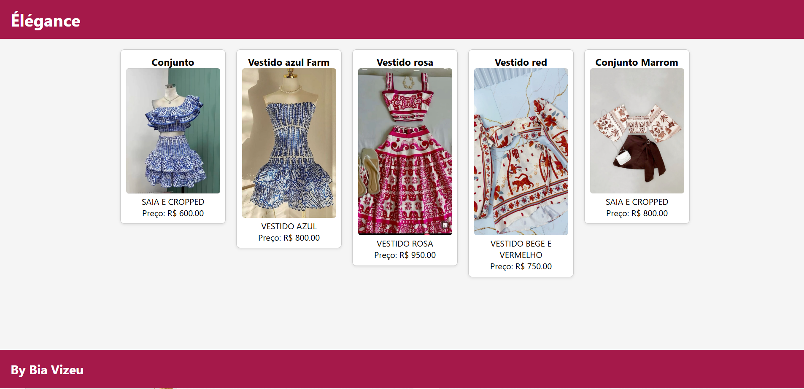

Aprendendo sobre...
- HTML
- CSS
 JAVA SCRIPT
JAVA SCRIPT- SQL
Tenho 16 anos, estou no 3° Ano do Ensino Médio, estou cursando T.I. no SENAI, mas no futuro pretendo cursar medicina.
Foi solicitado pelo professor na aula de PBE1 a simulação de uma tela de cadastro para uma Clínica Média.

Modelo de Site para uma loja de roupa, contendo o nome, descrição e o preço do produto.
Página de Cadastro de uma escola, contendo Alunos, Professores, Turmas e Disciplinas.

A programação é essencial no desenvolvimento tecnológico atual, com impacto em diversas áreas.
O meu TCC tem como objetivo explorar uma área diferente: a floricultura. O trabalho aborda os conceitos e a implementação prática de soluções para criar um sistema que ajude uma floricultura a organizar, classificar e nomear suas plantas, fornecendo informações como nome, espécie, classificação botânica e imagem ilustrativa.
Essa ferramenta permitirá melhorar os processos internos da loja, evitar erros na identificação das espécies e oferecer um atendimento mais rápido e personalizado, resultando em maior satisfação dos clientes e maior eficiência operacional.
Serão discutidas as linguagens e ferramentas utilizadas, além dos desafios enfrentados durante o desenvolvimento. O trabalho visa demonstrar o conhecimento adquirido no curso de PSOF e também contribuir para a obtenção de uma boa nota.